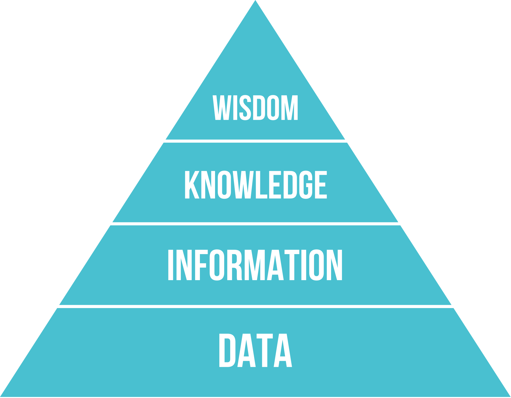

Data - Information - Knowledge#
In Data Acquisition – Where Do We Get Our Data? we just made an effort to collect our own data. What comes next?
Contrary to what the term data science might suggest, data science is not really about data alone. If data is the raw material, then the actual goal is something else: understanding. Or, put a bit more formally, the goal is to generate knowledge. We search through data not because data itself is so beautiful, but because we hope to learn something from it.
To understand what this means, we need to look a little more closely at the terms data, information, and knowledge, and at how they relate to each other.
Imagine the following scene. I am holding a small stone in my hand and ask you what will happen if I release it. Almost everyone will confidently answer that the stone will fall to the ground (except if you expect a trick question, which this is not). And that answer is, of course, correct. But why are you so sure? You have never seen this specific stone fall before. In other words, you do not have data about this exact event. And yet you are still confident that you know what will happen.
This small example already reveals something important: knowledge is not the same thing as directly observed data. We often know things because we can relate new situations to previous experiences, background assumptions, and general rules that we have learned about the world.
What does it mean to “know” something?#
Philosophers have thought about this question for a very long time, and there is no single final answer. But one classical idea is surprisingly useful for us here. It says that a person S knows a proposition p if three conditions are met:
S believes that p
p is true
S has good reasons to believe that p
This is often called the idea of knowledge as justified true belief.
Why do we need all three parts?
The first part alone is obviously not enough. If you (mistakenly) believe that you “know that Mumbai is the capital of India”, it is clear that this alone does not make it knowledge. When someone would then point out that the capital of India is New Delhi it would make it very clear that you only thought you knew. So, the statement has to be true.
But even truth and belief together are still not enough. Imagine someone saying, “I know that the next dice roll will be a six!”. Suppose the dice is then rolled, and by pure chance it really does land on six. The person believed it, and the statement turned out to be true. Still, we would hesitate to call this knowledge, because the person had no good reason to think it would happen.
This is why the third part matters: knowledge requires some form of justification, support, or good reason.
Now let us return to the stone. Why do you know that it will fall? Not because you have observed this exact event before, but because you have good reasons to expect it. You have seen countless similar events, and your experience fits with a broader understanding of gravity and how objects behave near the Earth’s surface. So your belief is not only true, but also well justified.
For our purposes, this is already enough. The point is not to solve philosophy once and for all, but to understand that knowledge goes beyond isolated observations. It involves interpretation, background assumptions, and reasons.
Data, information, and knowledge#
A commonly shown model for the relation between these concepts is the DIKW pyramid: Data, Information, Knowledge, Wisdom (Fig. 8). It presents a simple hierarchy from raw data to deeper understanding and finally to wisdom.
In practice, however, this model is often criticized for being too simplistic, too vague, or even misleading [Frické, 2009]. And for an introduction to data science, the top level, wisdom, is not very important for now. What is useful, however, is the distinction between data, information, and knowledge. In the following chapters, I will use these terms roughly in the following sense:
Data: Raw values or findings obtained through observations, measurements, surveys, logs, experiments, or other forms of recording. At this stage, data may still be unstructured, incomplete, or entirely meaningless to us. Imagine a wildlife camera in a forest that records day and night. Most of the data may just show empty scenery, wind, shadows, or leaves. It is data, but it may not yet be informative for our actual question.
Information: Data in context. Information is data that has been organized, structured, or interpreted in a way that gives it potential meaning. One useful formulation is: “Information is data with potential significance for a user” [Otte et al., 2020]. Once we identify which camera images show animals, at what times, and in which locations, the raw recordings begin to turn into information.
Knowledge: Understanding that goes beyond isolated pieces of information. Knowledge includes rules, patterns, theories, and explanations that we can use with a relatively high degree of confidence. If repeated camera observations show that a certain animal tends to appear in a particular area at dawn, and if this pattern is robust enough to guide future expectations or decisions, we are already moving toward knowledge.
{kind=link}

Fig. 8 The DIKW Pyramid. Source: wikipedia#
{kind=link}
These distinctions are not perfectly sharp, and different authors use the terms somewhat differently. But for our purposes, they are useful. They help us see that there is a difference between recording values, structuring and interpreting them, and finally arriving at something like robust understanding.
From data to knowledge#
A helpful analogy is detective work. A detective starts with clues. A footprint here, a broken window there, a suspicious message, a missing key. Each clue on its own may seem random, weak, or unimportant. These are like our data.
As the detective starts connecting these clues, putting them into context, and relating them to the case, a clearer picture begins to emerge. This is like information: the clues are no longer isolated, but organized in a meaningful way.
Finally, the detective tries to understand what actually happened. They consider alternative explanations, compare them, discard unlikely ones, and arrive at the explanation that best fits the available evidence. This is much closer to knowledge.
That is also what we are after in data science. We usually do not just want to store or summarize data. We want to detect patterns, test ideas, build explanations, and generate understanding that can inform decisions or further inquiry.
At the same time, there is no simple recipe for moving from data to knowledge. In fact, this question has been central not only in science, but also in philosophy: how can we derive reliable knowledge from limited observations? There is no single final answer, and discussing all major positions would take us far beyond the scope of this book. Still, it is worth briefly looking at two influential ideas.
A classical view of scientific progress was proposed by Karl Popper [Popper, 2013]. According to Popper, scientists formulate hypotheses based on initial observations, background knowledge, and creative reasoning. These hypotheses are then tested as rigorously as possible. If a hypothesis fails, it must be revised or rejected. In this way, knowledge progresses not because we can ever prove a theory with absolute certainty, but because we can eliminate explanations that do not survive confrontation with the data.
Another useful idea is Inference to the Best Explanation [Bartelborth, 2017]. The basic logic is simple. We begin with observations, that is, with data. We then formulate several possible explanations for what we observe. Some of these explanations will fit the data poorly and can be discarded. Others remain plausible. Among these, we then prefer the explanation that best accounts for the observations while also fitting with our broader background knowledge.
A simplified version of this process looks like this:
Observation: We start with phenomena that we observe or record. This is our raw data.
Hypothesis formulation: We develop possible explanations for what we observe.
Testing and refinement: Some explanations fit the data poorly and must be revised or rejected.
Comparison: We compare the remaining explanations. Which one accounts for the data best?
Selection: We tentatively accept the explanation that appears most plausible, most coherent, and most compatible with other established knowledge.
This kind of reasoning is everywhere in science, and also in data science. When we look for patterns in data, test statistical hypotheses, build predictive models, or compare alternative explanations for an observed effect, we are essentially trying to move from isolated observations toward better-supported understanding.
Of course, this process is never free of pitfalls. Data may be incomplete, biased, noisy, or misleading. Important alternative explanations may be overlooked. Patterns may appear meaningful even though they arose by chance. And even good models may capture correlations without telling us much about deeper causal mechanisms. So moving from data to knowledge is not automatic. It requires caution, critical thinking, and repeated checking.
Still, that is exactly what makes data science interesting. It is not simply about handling data or applying tools. It is about carefully transforming recorded observations into meaningful, defensible understanding.
Why this matters for data science#
This distinction between data, information, and knowledge is not just philosophical decoration. It has practical consequences.
As data scientists, we often begin with data that is incomplete, messy, or difficult to interpret. Our first task is usually not to jump to conclusions, but to structure, explore, and understand the data well enough that it becomes informative. Only then can we begin asking whether we are actually learning something robust from it.
This also reminds us that not every output of an analysis is already knowledge. A model prediction, a graph, or a statistical association may be informative, but it does not automatically count as knowledge. We still need to ask: Is it trustworthy? Does it generalize? Are there alternative explanations? Does it fit with what else we know? And can we justify why we believe it?
In that sense, data science is part technical craft, part scientific reasoning, and part careful skepticism.
Further readings#
If this topic interests you, there are many exciting philosophical discussions about knowledge and about how scientific methods allow us to move from observations to more reliable understanding.
Here are two further examples:
Keith Lehrer, Theory of Knowledge, 2nd edition, 2019 [Lehrer, 2019]
Max Boisot and Augustí Canals, “Data, information and knowledge: have we got it right?””, 2004, Journal of Evolutionary Economics [Boisot and Canals, 2004]